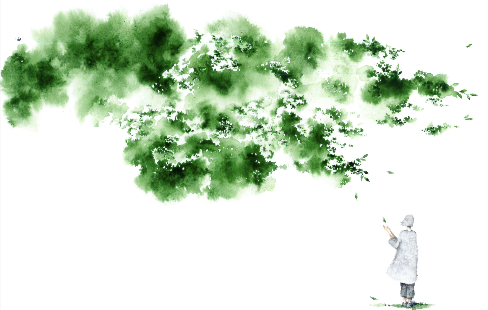
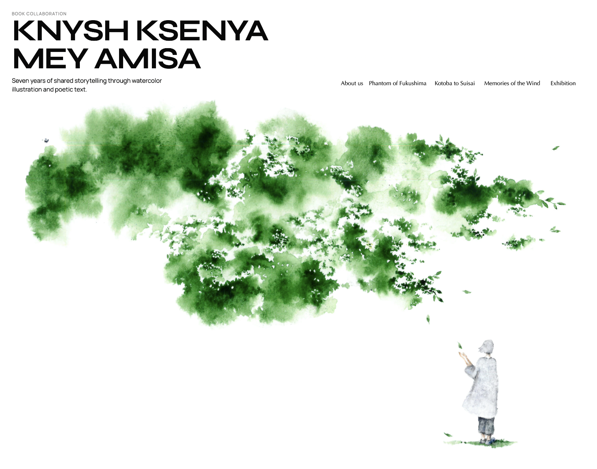
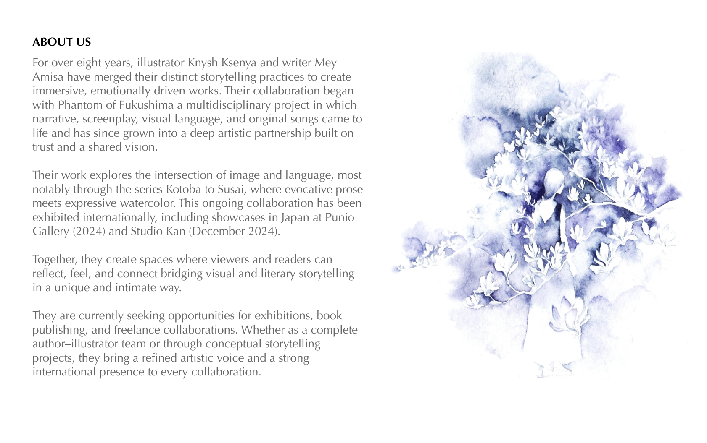
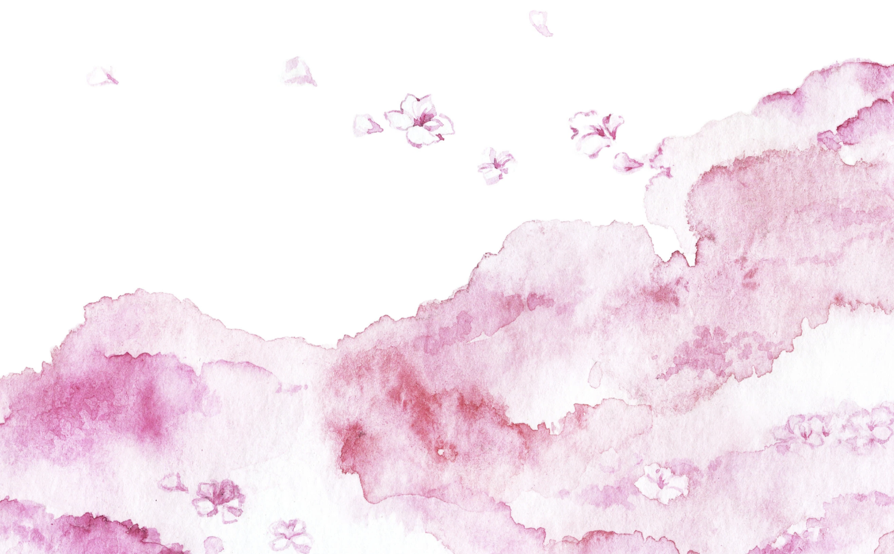
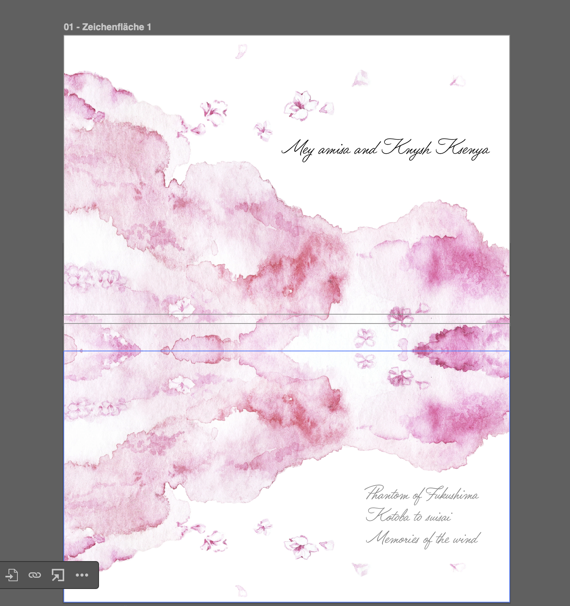
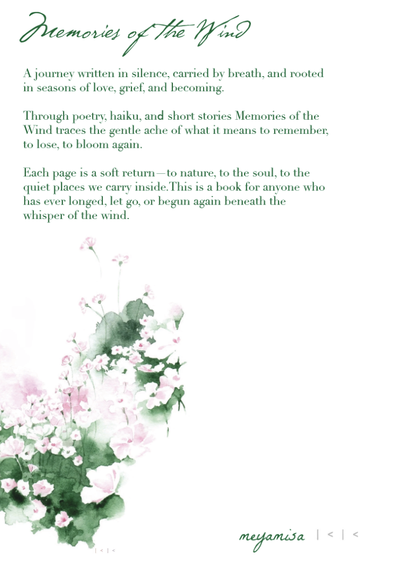

Book Collaboration
Knysh Ksenya Mey Amisa


About Us
For over eight years, illustrator Knysh Ksenya and writer Mey Amisa have merged their distinct storytelling practices to create immersive, emotionally driven works. Their collaboration began with Phantom of Fukushima, a multidisciplinary project in which narrative, screenplay, visual language, and original songs came to life and has since grown into a deep artistic partnership built on trust and a shared vision.
Their work explores the intersection of image and language, most notably through the series Kotoba to Susai, where evocative prose meets expressive watercolor. This ongoing collaboration has been exhibited internationally, including showcases in Japan at Punio Gallery (2024) and Studio Kan (December 2024).
Together, they create spaces where viewers and readers can reflect, feel, and connect, bridging visual and literary storytelling in a unique and intimate way.
They are currently seeking opportunities for exhibitions, book publishing, and freelance collaborations. Whether as a complete author-illustrator team or through conceptual storytelling projects, they bring a refined artistic voice and a strong international presence to every collaboration.

Phantom of Fukushima
Kotoba to Suisai
Book mockup and inside preview section.


Memories of the Wind
One sample preview page.

Book Section Upload Space
Reflection Exhibition
A short exhibition archive showing both books and installation atmosphere from the Reflection duo presentation.